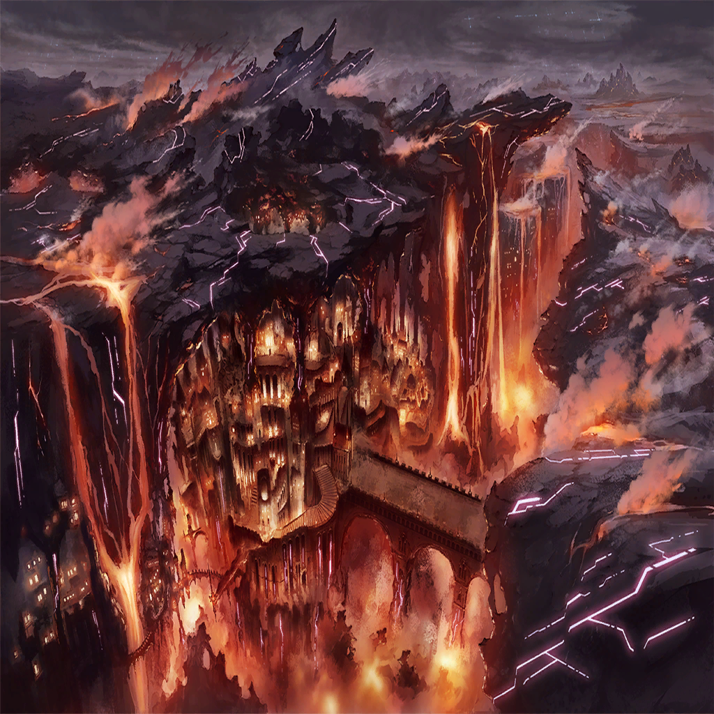

Sulva
Sulva
Sulva
Sulva
Sulva
Sulva

Sulva
Sulva
Sulva
Sulva
Sulva
Sulva
Sulva
Sulva
Sulva
Sulva

Sulva
Sulva
Sulva
Sulva
Sulva
Sulva
Sulva
Sulva

Nimul
Nimul
Nimul
Sulva
Sulva
Sulva
Nimul

Daphne
Sulva
Nimul
| |
| |
|  | |
| ??? | ... |
| Knight of Wrath A | Hey, did you hear? The village to the west of here got swallowed by the flames of corruption. |
| Knight of Wrath B | Already? That's the third one this month. |
| Knight of Wrath B | It seems the invasion of the Invidia Belt also failed miserably. At this rate we're all going to— |
| ??? | ... |
| |
| ??? | Did you hear King Arius lost? |
| ??? | He is basically wrath itself! None of us have ever come close to matching him and they beat him? |
| ??? | Does the Invidia Belt possess such fearsome knights? Who could've possibly beaten him? |
| ??? | And not just that— |
| Quence | Oh. Sulva. Are you...playing...outside the castle again? |
Sulva |
... |
| Quence | I don't care much for your antics. A brat ought to obediently listen to their caretakers. It would make all our lives much easier. |
| Quence | I understand the urge to act out while you're in your rebellious phase, but that does not give you free rein to behave like a spoiled child. |
Sulva |
...What does a serpent want with me? |
| Quence | Nothing at all. I simply saw you passing by. |
| Quence | I don't have any interest in you. Your pride will hit a dead-end sooner or later. |
Sulva |
...? |
| Quence | However, I have some thoughts about that sword you carry on your back. |
Sulva |
... |
| Quence | My, my, no need to be so wary. Didn't I just tell you I have no interest in you? |
| Quence | I'm busy enough keeping the Cursed Beast fed... |
| Quence | Didn't you hear? Satna flattened another village! |
| Quence | Here I am, trying so desperately to bring peace to this area, and there it goes, just doing whatever it wants. |
| Quence | Aah... If only Icona were still alive. That women really just did whatever she felt like. Even in death she's selfish. |
| Quence | I'd laugh if it weren't for the fact that I now have to clean up her mess. |
Sulva |
...I'm here to meet the queen. |
| Quence | Oh? Go right ahead then. The end is near, child. Enjoy the time you have left. |
| Quence | After all, in this world it isn't unusual to die before you realize what is happening. |
Sulva |
... |
| |
Sulva |
My queen, are you awake? |
Sulva |
...My queen? |
| Queen of Wrath | ...Sulva. What is it? |
Sulva |
What am I supposed to do? For what reason do I live? |
| Queen of Wrath | Why would you ask me such things? |
| Queen of Wrath | Your life, your work, and your actions are your own. |
| Queen of Wrath | Make your own decisions, face your own challenges, and live as you see fit. |
Sulva |
But... |
| Queen of Wrath | Are you still worried about what happened that day? |
| Queen of Wrath | When the former king—my brother Arius—sacrificed himself to save you? It was of his own volition. |
| Queen of Wrath | It may be the reason why he fell into corruption, but even if that is what makes our land perish, you aren't the one to blame. |
Sulva |
... |
| Queen of Wrath | You carry the Red Blade. The very blade that my brother, the king, entrusted to you. |
| Queen of Wrath | Nobody will voice their objections to your choices, regardless of how you use it. |
Sulva |
Perhaps, but... |
| Queen of Wrath | If you wished for the throne, then the sword would respond to that desire. |
| Queen of Wrath | I am but a false monarch. The one recognized by the sword could make this castle built on falsity crumble at any time. |
Sulva |
I do not wish to be king. |
| Queen of Wrath | Then what is it that you desire? For what do you wield that sword? For what do you fight? |
Sulva |
... |
Sulva |
(I don't know what I desire.) |
Sulva |
(All I want is to repay the one who saved my life.) |
| |
| Arius | Grrroooooaaaahhh! |
| Andechs | Haaaaaaaaaaaaaah! |
| Arius | You dare when in the Ira Belt it is I that—! |
| Andechs | Tch! |
| Arius | Nrgh! |
| Andechs | It's over, Arius. |
| Arius | Heh. |
| Arius | Hahahahahaha! Right. This is my end, is it? |
| Andechs | Your faith and ideals were once the light that showed us the way. |
| Andechs | That's exactly why I do not wish to see you corrupted by wrath any longer. |
| Arius | And what will you do about it? |
| Andechs | I will slay you. You will die at my hands! |
| |
| |
Sulva |
Ngh—! Ah— |
| Andechs | You—! Why do you protect a Fallen?! |
| Arius | ... |
Sulva |
This man— |
Sulva |
This man saved me... He shielded me from the corruption, so in turn I will—! |
| Andechs | I see... So that's why our king has become like this. |
Sulva |
He protected me, so in turn I must protect him, too... |
| Andechs | ...I'm afraid he's already fallen victim to the corruption. He will never return to his former self. |
| Andechs | This man is no longer the king you once knew. He's long since lost all his humanity. |
Sulva |
And what about it?! Does that mean I should just give up on saving him?! |
| Andechs | ... |
Sulva |
He saved my life... And because of that... |
Sulva |
I will save his! |
| Andechs | ...I see. |
| Andechs | I've come here to save this country. In order to do that, I am prepared to dirty my hands. |
| Andechs | If that means fighting a child, then so be it. |
Sulva |
... |
Nimul |
Andechs! |
| Andechs | Don't interfere! |
| Andechs | This is a fight between countrymen... Please, let me handle it. |
Nimul |
But... |
| Andechs | Please. |
Nimul |
... |
Sulva |
Tch! |
Sulva |
...Haa... Haa... |
| Andechs | ...Not bad, kid. You'd make a good knight one day. |
| Andechs | But this is the end. Run away. Don't throw your life away here. |
Sulva |
I can...still fight! |
| Andechs | I see. |
| ??? | Oh my, it looks like someone left themselves wide open. |
| Andechs | Huh?! |
Nimul |
What—?! |
Daphne |
Andechs! |
| Andechs | Ngh... |
Sulva |
Why did you—? |
| Andechs | Hah...ha... Why indeed... |
| Arius | Ande— |
| Quence | Such a tragic tale. |
| Quence | A fight between a boy who adores his fallen king, and the most prestigious knight of this country. |
| Quence | I would've loved to see the conclusion to this tale. |
| Quence | Sadly, I'm afraid I do not have the time. I'm sorry, but we'll need to wrap this up. |
Nimul |
...Serpent. |
| Quence | What's this? I haven't even had the chance to introduce myself, and yet you determined my true identity in the blink of an eye. A very perceptive boy you are. |
| Quence | But don't you know that introductions are an integral part of good etiquette? |
| Quence | I am Quence. And as you have already discerned, I am a member of the group you've been so desperately searching for: the Infinite Serpent. |
| Quence | Ah well, it's a pity I don't have the time to entertain you. |
| Quence | This is but the worthless prologue before your end! Enjoy your eternal slumber! |